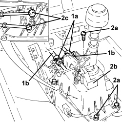
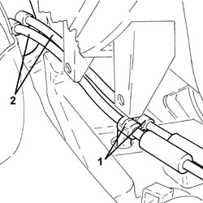
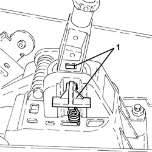

2125C30 GEAR ENGAGEMENT/SELECTION CABLES - R.R
- Path
- Procedures > 21 GEARBOX UNIT > 2125 MANUAL GEARBOX EXTERNAL CONTROLS > 2125C MANUAL GEARBOX EXTERNAL CONTROL (CABLES) > 2125C30 GEAR ENGAGEMENT/SELECTION CABLES - R.R
- Kind
- repair procedure (removal / refitting; the operation number is the code)
- Applies to
- all engines; all production periods
- Interactive page
- https://sloeber94.github.io/elrnDB-aBrrSpdr/en/#/946002079
Applies to: all engines; all production periods
 Removing
Removing
 Refitting
RefittingOp. 5530B52 BATTERY SUPPORT/DRIP TRAY - R.R
Op. 7045A10 FRONT SEAT (ONE), LEFT OR RIGHT - R.R.
(left and right).
Op. 7040L37 GEAR LEVER TRIM - R.R
Op. 3380A44 HANDBRAKE/LINKAGE PROTECTION - R+R
Op. 7040L20 TUNNEL COVER - R.R
Op. 7040L23 TRIM ON TUNNEL COVER - R.R.
Op. 7040A65 CONSOLE SIDE CLOSING (ONE) - R.R.
(left and right).
Op. 7040L74 TUNNEL TRIM MOUNTING BRACKET/SUPPORT - R.R.
1. Working on clips (1a), release flexible gear selector and engagement rods (1b) from the gearbox manual control lever support.
2. Undo bolts (2a) and lift up gearbox manual control lever support (2b) as necessary and disconnect flexible gear selector and engagement rods (2c).

Applies to: all engines; all production periods
1. Disconnect the gear selection and engagement flexible rods from the gearbox.

Applies to: all engines; all production periods
1. Working on clips (1a), release flexible gear selection and engagement rods (1b) from mounting bracket (1c).

Applies to: all engines; all production periods
1. Raise selection unit until hole (1a) is aligned with hole (1b), then insert a 5 mm diameter pin (1c) and lock the assembly in this position.

Applies to: all engines; all production periods
- Remove the gear selection and engagement flexible rods, releasing them towards the engine compartment.
1. Release the flexible gear selector and engagement rods from the retaining band.
2. Remove the gear selection and engagement flexible rods, releasing them via the passage in the engine compartment bulkhead.

Applies to: all engines; all production periods
Refitting
Removing- Place the gear selection and engagement flexible links in their housings, introducing them via the passage in the engine compartment bulkhead.
- Fasten the flexible gear selector and engagement rods using the retaining band.
- Connect the flexible gear selector and engagement rods, place the manual gear control lever support in its housing and tighten the bolts.
1. Attach the adjustment lever using the clip on the gear lever to the cover in such a way as to lock it in neutral on the 1st-2nd selection plane in order to carry out the adjustment.

Applies to: all engines; all production periods
1. Prepare auto-adjustment device (quick adjuster) located on the gear selection cable by pulling component (1a) backwards and lowering spring (1b); release component (1a) to keep spring (1b) in position.

Applies to: all engines; all production periods
- Remove the pin used for locking the gear control assembly.
- Release the adjustment lever and clip from the cover on the gear lever.
- Check the gear selection/engagement by moving the gear control lever and make sure that the self-adjustment device (quick adjuster) slides on the terminal.
Applies to: all engines; all production periods
Op. 7040L74 TUNNEL TRIM MOUNTING BRACKET/SUPPORT - R.R.
Op. 7040A65 CONSOLE SIDE CLOSING (ONE) - R.R.
(left and right).
Op. 7040L23 TRIM ON TUNNEL COVER - R.R.
Op. 7040L20 TUNNEL COVER - R.R
Op. 3380A44 HANDBRAKE/LINKAGE PROTECTION - R+R
Op. 7040L37 GEAR LEVER TRIM - R.R
Op. 7045A10 FRONT SEAT (ONE), LEFT OR RIGHT - R.R.
(left and right).
Topics linked from this page (9)
- 3380A44 HANDBRAKE/LINKAGE PROTECTION - R+R
- 5530B10 BATTERY - R+R
- 5530B52 BATTERY SUPPORT/DRIP TRAY - R.R
- 7040A65 CONSOLE SIDE CLOSING (ONE) - R.R.
- 7040L20 TUNNEL COVER - R.R
- 7040L23 TRIM ON TUNNEL COVER - R.R.
- 7040L37 GEAR LEVER TRIM - R.R
- 7040L74 TUNNEL TRIM MOUNTING BRACKET/SUPPORT - R.R.
- 7045A10 FRONT SEAT (ONE), LEFT OR RIGHT - R.R.